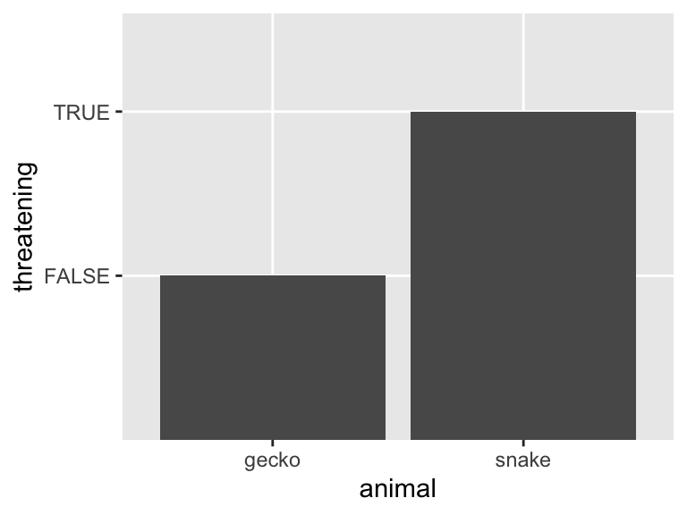

my_df <- tibble(animal = c('snake', 'gecko'),
threatening = c(TRUE, FALSE))
my_df# A tibble: 2 × 2
animal threatening
<chr> <lgl>
1 snake TRUE
2 gecko FALSE Table 1
Use this as a template. Keep the headers and remove all other text. Overall, your report may be quite short. When it is complete, render and then push changes to your team repository.
Write a one-paragraph abstract summarizing what you did and your findings. It need not be comprehensive; try to highlight the most important or interesting outcomes.
The dataset was obtained from a survey that all 2025 Fall Quarter PSTAT 197A students completed. Personal identifying information was removed to ensure anonymity. Students were asked about classes they took, whether they have done research, what year they were, what preference for projects they have, etc. Students were informed that this data would be used by the class, and had the option to opt out of being in the dataset.
We sought to understand the relationship between coursework and a student’s proficiency/curiosity. Our analysis addressed three questions:
Summarize your results. Don’t try to explain every step you took; focus instead on providing the main data analytic outputs – tables and figures – and explaining clearly what they show. Clarify any important decisions you made in obtaining them. You can display codes if you like but it is not necessary.
Due to the visual editor, most common needs for authoring can be met using menu items in the RStudio IDE. For a comprehensive guide to Quarto, see the documentation; consult the documentation for anything you can’t sort out in the IDE.
Insert code chunks using the Insert drop-down menu or ctrl + alt + I . By default in this document, codes will not be shown but results will. If you want to change this behavior, add the chunk option echo: true as below.
my_df <- tibble(animal = c('snake', 'gecko'),
threatening = c(TRUE, FALSE))
my_df# A tibble: 2 × 2
animal threatening
<chr> <lgl>
1 snake TRUE
2 gecko FALSE Code chunks will be executed in order when the document is rendered, so packages should be loaded at the very beginning of the document
Several functions exist for converting dataframes to markdown tables for nice display. A simple one from the knitr package is knitr::kable() .
| animal | threatening |
|---|---|
| snake | TRUE |
| gecko | FALSE |
To include any figures not generated by code chunks, use Insert > Figure / Image or  .
Most of the time code chunks producing plots will render fine. However, to adjust sizing or alignment, use the chunk options fig-width and fig-height . Captions can be added with fig-cap .

To include any hyperlinks, use [display text](url) .